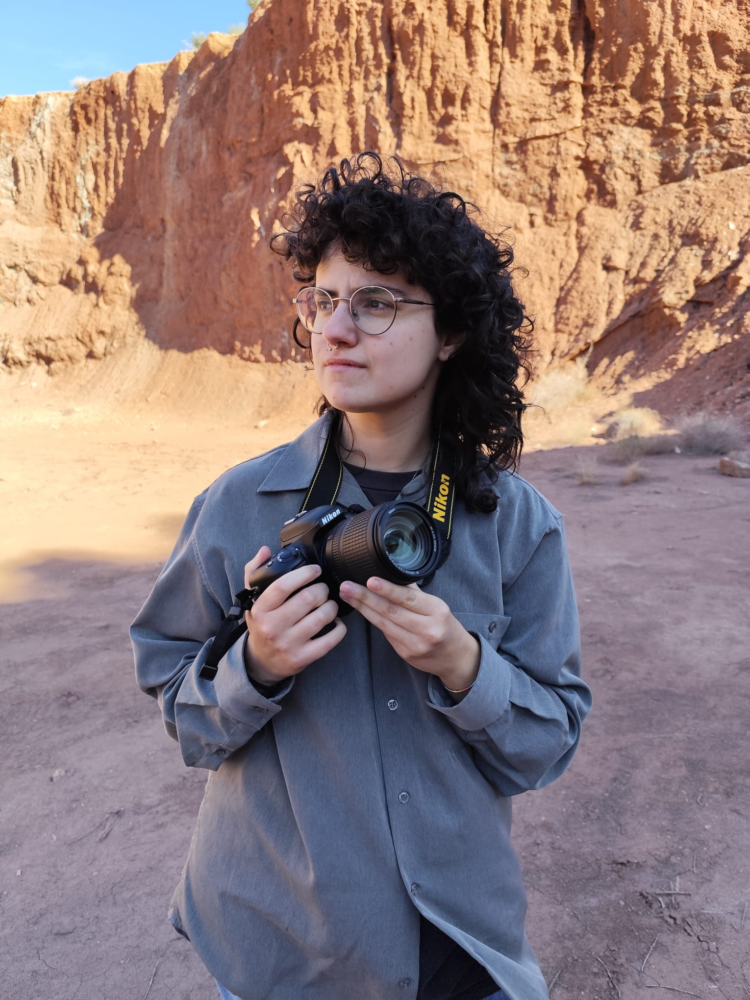

Con base en Alicante y graduada en Comunicación Audiovisual, concibo la fotografía como un ejercicio de empatía visual y precisión técnica. Mi trabajo abarca desde el retrato editorial hasta la cobertura de eventos culturales y festivales de cine, capturando con solvencia tanto la inmediatez del directo como la intimidad de una sesión. Destaco por un tratamiento del color cálido y muy cuidado, un flujo de trabajo ágil para entregas en tiempo real y una capacidad natural para adaptar la lente a la personalidad de cada proyecto.
Graduada en Comunicación Audiovisual.